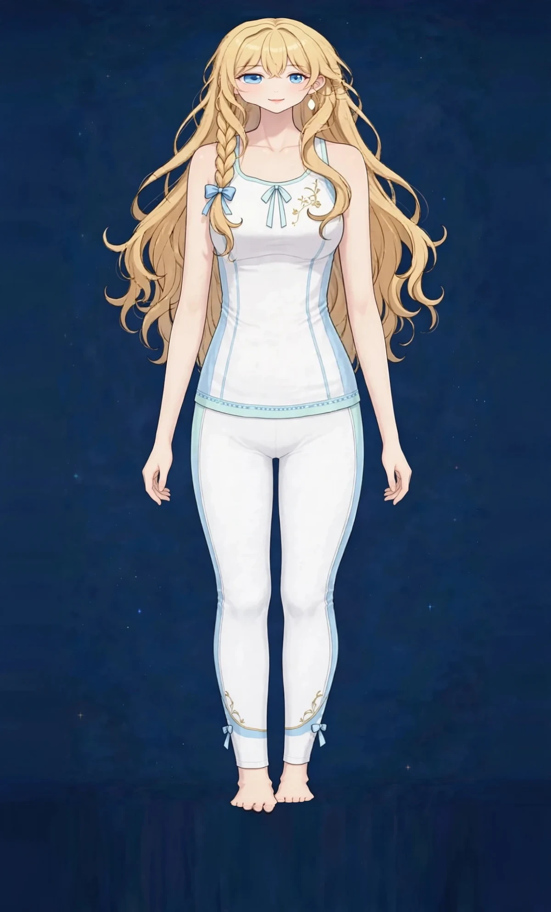
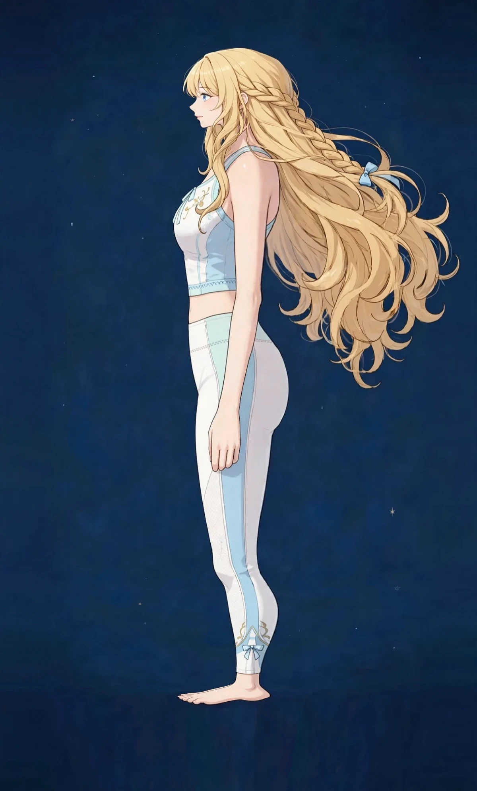
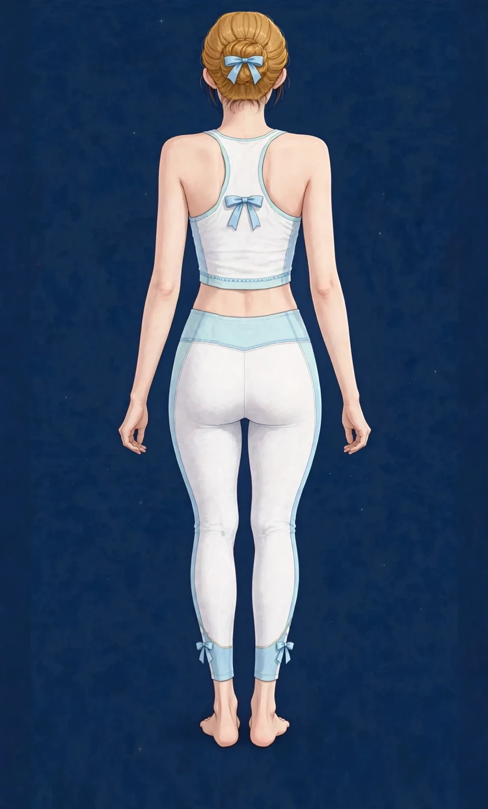

経絡ガイド — 体を巡る12の流れ
東洋医学では、体には「経絡」と呼ばれる気血の通り道があると考えます。ステラベガの施術は、この流れを整えることを土台にしています。
- 肺経呼吸と肌のうるおい
- 大腸経巡りとすっきり感
- 胃経消化と顔まわり
- 脾経水分代謝とむくみ
- 心経気持ちの落ち着き
- 小腸経肩甲骨まわり
- 膀胱経背中全体のライン
- 腎経冷えと活力の土台
- 心包経胸のつかえ感
- 三焦経全身の巡りの調整
- 胆経体の側面と頭まわり
- 肝経周期とイライラ感
経絡図ガイド
施術の土台となる体の地図を、図でご紹介します。全身を巡る経絡の流れを三面で示した総合図（図1）と、その経穴の一覧、姿勢を見る際の指標（図2・図3）です。
図1 全経絡総合図 — 十四経絡（前面・側面・背面）
十二経脈に督脈・任脈を加えた十四経絡の全361経穴を、前面・側面・背面の3方向に振り分けて重ねた総合図です。経絡ごとに色分けし、フィットしたヨガウェアを着た人物の姿の上に、経絡の線と経穴を重ねて描いています。肩・肩甲骨・骨盤・膝の位置が、衣服の上から指標として読み取れます。



肺経（11穴） 大腸経（20穴） 胃経（45穴） 脾経（21穴） 心経（9穴） 小腸経（19穴） 膀胱経（67穴） 腎経（27穴） 心包経（9穴） 三焦経（23穴） 胆経（44穴） 肝経（14穴） 督脈（28穴） 任脈（24穴）
※ 側面図では、体の側面を走る胆経と、正中を走る督脈・任脈の経穴を点で示し、背面の膀胱経と前面の胃経はラインのみを示しています。側面への投影が難しい経穴は無理に配置せず、前面図・背面図に示しました。経穴の番号と名称は下の「経穴一覧」でご確認いただけます。経穴・経絡の位置は古典的な走行をもとにした模式図上の目安であり、正確な位置を示すものではありません。
経穴一覧 — 図1の番号と名称
各経絡の経穴（ツボ）を、図1と同じ番号順に並べた一覧です。経穴名はWHO標準経穴部位に基づく一般的な名称です。番号は経絡ごとに1から数えます。
肺経の経穴 — 全11穴
1. 中府、2. 雲門、3. 天府、4. 侠白、5. 尺沢、6. 孔最、7. 列缺、8. 経渠、9. 太淵、10. 魚際、11. 少商
大腸経の経穴 — 全20穴
1. 商陽、2. 二間、3. 三間、4. 合谷、5. 陽谿、6. 偏歴、7. 温溜、8. 下廉、9. 上廉、10. 手三里、11. 曲池、12. 肘髎、13. 手五里、14. 臂臑、15. 肩髃、16. 巨骨、17. 天鼎、18. 扶突、19. 禾髎、20. 迎香
胃経の経穴 — 全45穴
1. 承泣、2. 四白、3. 巨髎、4. 地倉、5. 大迎、6. 頬車、7. 下関、8. 頭維、9. 人迎、10. 水突、11. 気舎、12. 缺盆、13. 気戸、14. 庫房、15. 屋翳、16. 膺窓、17. 乳中、18. 乳根、19. 不容、20. 承満、21. 梁門、22. 関門、23. 太乙、24. 滑肉門、25. 天枢、26. 外陵、27. 大巨、28. 水道、29. 帰来、30. 気衝、31. 髀関、32. 伏兎、33. 陰市、34. 梁丘、35. 犢鼻、36. 足三里、37. 上巨虚、38. 条口、39. 下巨虚、40. 豊隆、41. 解谿、42. 衝陽、43. 陥谷、44. 内庭、45. 厲兌
脾経の経穴 — 全21穴
1. 隠白、2. 大都、3. 太白、4. 公孫、5. 商丘、6. 三陰交、7. 漏谷、8. 地機、9. 陰陵泉、10. 血海、11. 箕門、12. 衝門、13. 府舎、14. 腹結、15. 大横、16. 腹哀、17. 食竇、18. 天谿、19. 胸郷、20. 周栄、21. 大包
心経の経穴 — 全9穴
1. 極泉、2. 青霊、3. 少海、4. 霊道、5. 通里、6. 陰郄、7. 神門、8. 少府、9. 少衝
小腸経の経穴 — 全19穴
1. 少沢、2. 前谷、3. 後谿、4. 腕骨、5. 陽谷、6. 養老、7. 支正、8. 小海、9. 肩貞、10. 臑兪、11. 天宗、12. 秉風、13. 曲垣、14. 肩外兪、15. 肩中兪、16. 天窓、17. 天容、18. 顴髎、19. 聴宮
膀胱経の経穴 — 全67穴
1. 晴明、2. 攅竹、3. 眉衝、4. 曲差、5. 五処、6. 承光、7. 通天、8. 絡却、9. 玉枕、10. 天柱、11. 大杼、12. 風門、13. 肺兪、14. 厥陰兪、15. 心兪、16. 督兪、17. 膈兪、18. 肝兪、19. 胆兪、20. 脾兪、21. 胃兪、22. 三焦兪、23. 腎兪、24. 気海兪、25. 大腸兪、26. 関元兪、27. 小腸兪、28. 膀胱兪、29. 中膂兪、30. 白環兪、31. 上髎、32. 次髎、33. 中髎、34. 下髎、35. 会陽、36. 承扶、37. 殷門、38. 浮郄、39. 委陽、40. 委中、41. 附分、42. 魄戸、43. 膏肓、44. 神堂、45. 譩譆、46. 膈関、47. 魂門、48. 陽綱、49. 意舎、50. 胃倉、51. 肓門、52. 志室、53. 胞肓、54. 秩辺、55. 合陽、56. 承筋、57. 承山、58. 飛揚、59. 跗陽、60. 崑崙、61. 僕参、62. 申脈、63. 金門、64. 京骨、65. 束骨、66. 足通谷、67. 至陰
腎経の経穴 — 全27穴
1. 湧泉、2. 然谷、3. 太谿、4. 大鐘、5. 水泉、6. 照海、7. 復溜、8. 交信、9. 築賓、10. 陰谷、11. 横骨、12. 大赫、13. 気穴、14. 四満、15. 中注、16. 肓兪、17. 商曲、18. 石関、19. 陰都、20. 腹通谷、21. 幽門、22. 歩廊、23. 神封、24. 霊墟、25. 神蔵、26. 或中、27. 兪府
心包経の経穴 — 全9穴
1. 天池、2. 天泉、3. 曲沢、4. 郄門、5. 間使、6. 内関、7. 大陵、8. 労宮、9. 中衝
三焦経の経穴 — 全23穴
1. 関衝、2. 液門、3. 中渚、4. 陽池、5. 外関、6. 支溝、7. 会宗、8. 三陽絡、9. 四瀆、10. 天井、11. 清冷淵、12. 消濼、13. 臑会、14. 肩髎、15. 天髎、16. 天牖、17. 翳風、18. 瘈脈、19. 顱息、20. 角孫、21. 耳門、22. 耳和髎、23. 絲竹空
胆経の経穴 — 全44穴
1. 瞳子髎、2. 聴会、3. 上関、4. 頷厭、5. 懸顱、6. 懸釐、7. 曲鬢、8. 率谷、9. 天衝、10. 浮白、11. 頭竅陰、12. 完骨、13. 本神、14. 陽白、15. 頭臨泣、16. 目窓、17. 正営、18. 承霊、19. 脳空、20. 風池、21. 肩井、22. 淵腋、23. 輒筋、24. 日月、25. 京門、26. 帯脈、27. 五枢、28. 維道、29. 居髎、30. 環跳、31. 風市、32. 中瀆、33. 膝陽関、34. 陽陵泉、35. 陽交、36. 外丘、37. 光明、38. 陽輔、39. 懸鐘、40. 丘墟、41. 足臨泣、42. 地五会、43. 俠谿、44. 足竅陰
肝経の経穴 — 全14穴
1. 大敦、2. 行間、3. 太衝、4. 中封、5. 蠡溝、6. 中都、7. 膝関、8. 曲泉、9. 陰包、10. 足五里、11. 陰廉、12. 急脈、13. 章門、14. 期門
督脈の経穴 — 全28穴
1. 長強、2. 腰兪、3. 腰陽関、4. 命門、5. 懸枢、6. 脊中、7. 中枢、8. 筋縮、9. 至陽、10. 霊台、11. 神道、12. 身柱、13. 陶道、14. 大椎、15. 啞門、16. 風府、17. 脳戸、18. 強間、19. 後頂、20. 百会、21. 前頂、22. 囟会、23. 上星、24. 神庭、25. 素髎、26. 水溝、27. 兌端、28. 齦交
任脈の経穴 — 全24穴
1. 会陰、2. 曲骨、3. 中極、4. 関元、5. 石門、6. 気海、7. 陰交、8. 神闕、9. 水分、10. 下脘、11. 建里、12. 中脘、13. 上脘、14. 巨闕、15. 鳩尾、16. 中庭、17. 膻中、18. 玉堂、19. 紫宮、20. 華蓋、21. 璇璣、22. 天突、23. 廉泉、24. 承漿
※ 経絡の説明は東洋医学の伝統的な考え方にもとづくもので、施術はリラクゼーションと美容を目的としています。医療行為ではなく、鍼（はり）を使った施術は当サロンでは行いません。体調に不安がある場合は、まず医療機関へご相談ください。